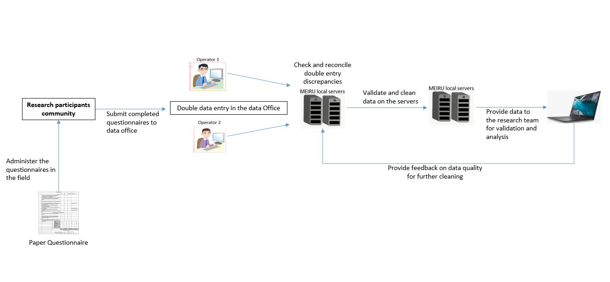
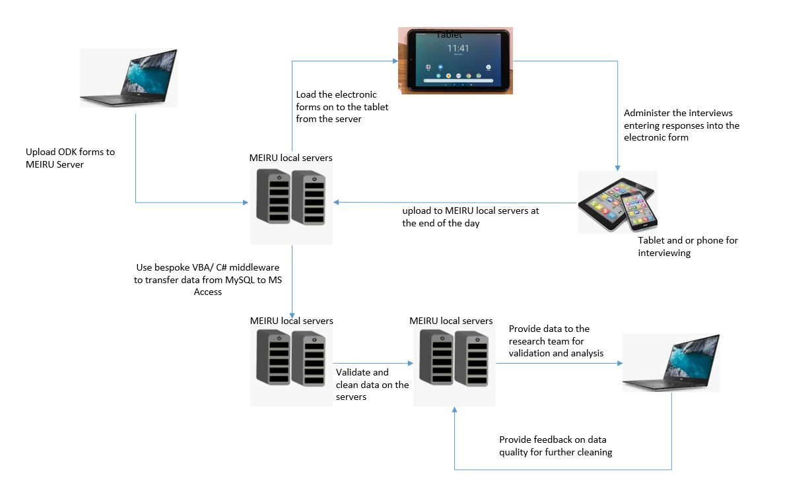
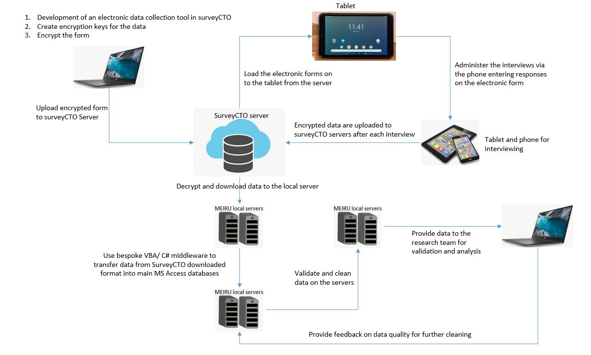

One of the great Artists that Malawi ever had
Listen to "Nkhujipereka.Mp3",One of Wambali's popular songs
Wambali Mkandawire who was also popular by the name “Mteweti”(which is a Tumbuka word meaning; the servant; precisely “servant of God”), was a Malawian Jazz singer .According to the data from Wikipedia, Wambali was a Malawian nationality who was born in 1951, in the Democratic Republic of the Congo. Wambali had an authentic approach to music which makes his music to have a unique taste that makes most of us enjoy listening to his songs all day. Sadly on 31, January, 2021 we lost him due to the covid-19 pandemic, however he will always remain in our hearts through his soothing music and may his soul keep resting in peace.
Below are some of his notable achievements:
I personally think that ,Wambali was one of the great musicians that Malawi has ever been blessed with. His songs in my view had meaning and were so soothing. I think this explains why many people mourned him allot on the day that he passed on.
Reference(s)
Malawi24,(2021). Wambali Mkandawire no more.Retrieved from
https://malawi24.com/2021/01/31/wambali-mkandawire-no-more/
  